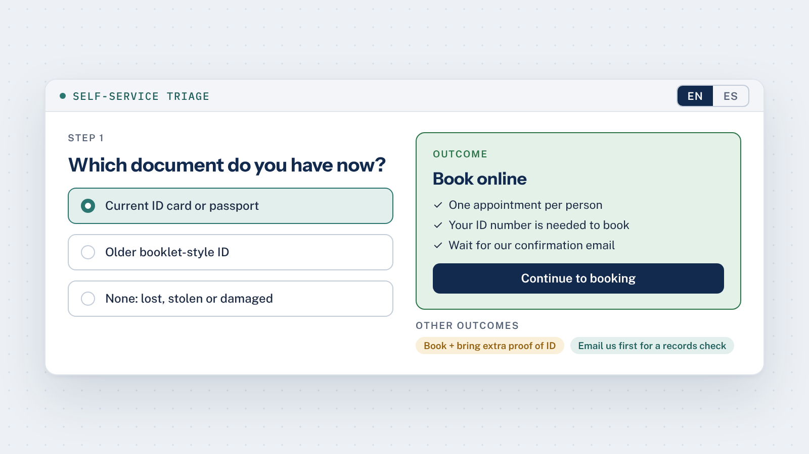
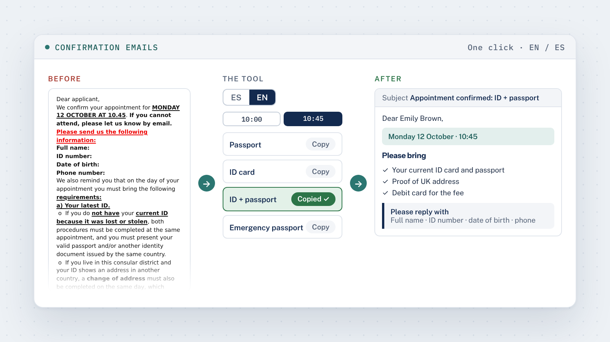
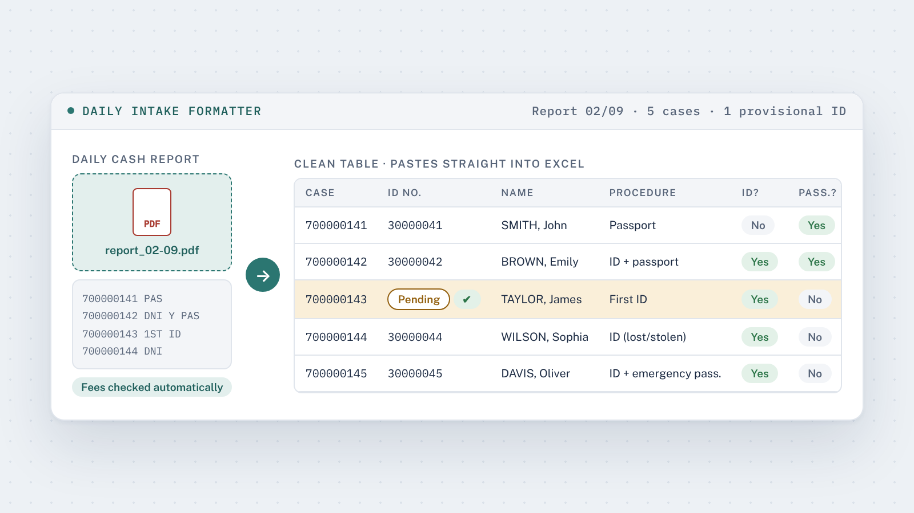
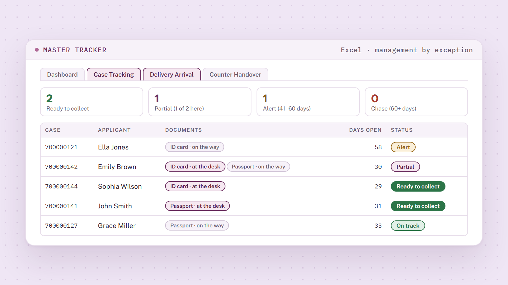
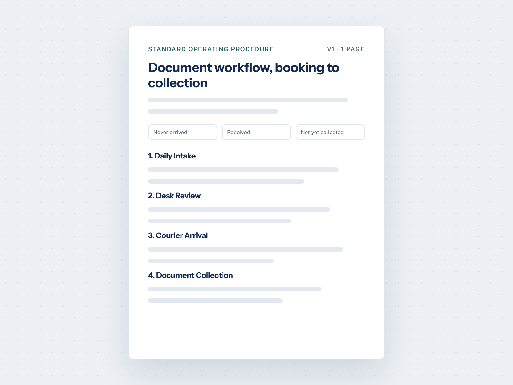

Operations · BizOps & PMO · London
I find the manual work that slows teams down, and build simple tools to replace it.
Operations professional with 10+ years of international experience across consular, public sector, legal and facilities roles. Currently leading the Passport Section at the Consulate of Argentina in London.
- 01TriageBefore bookingChecked
- 02Email GeneratorBooking confirmedEmail sent
- 03FormatterDaily intakeIn the tracker
- 04TrackerArrival to collectionCollected
- Each delivery · up to 200 documents~4 hrsFasterunder 30 min
- Built and handed overIn daily use4 tools + 1 SOP
- Each confirmation email~3–5 minFasterunder 30 sec
Work
A document workflow, rebuilt
I spotted where our document workflow was losing time and designed a simpler process. I had to work with the resources already available, so every tool was designed around the office’s limits, not the other way round.
I then built it as four connected tools and a one-page SOP, using generative AI. Together they cover every stage of a document’s life, from booking to collection.
- Before the appointment
- 01
Before booking
Self-Service Triage Tool
A bilingual guide, sent to applicants instead of the booking site, so they check before they book.
Key resultChecked before they bookView case study →
- 02
Booking confirmed
Confirmation Email Generator
A clearly formatted confirmation email, ready to paste in one click.
Key result~3–5 min → under 30 secper emailView case study →
- After the appointment · document tracking
- 03
Daily intake
Data Formatter
Turns the daily intake report into clean rows for the tracker.
Key resultDaily intake in secondsView case study →
- 04
Arrival to collection
Master Tracker
A barcode-scanned workbook that flags delays, so the team tracks cases proactively.
Key resultOne scan per documentReactive → proactiveView case study →
- 05
The guide for document tracking
Standard Operating Procedure
A one-page procedure for Formatter and Tracker, from daily intake to collection.
Key result4 stages, end to endView case study →
All names and data in the demos are fictional.
- Role
- Passport Section lead
- Experience
- 10+ years, 4 countries
- Looking for
- BizOps · PMO, London
- Learning
- SQL and Python
About
Making things simpler
I’m an operations professional with 10+ years of international experience in Argentina, Canada, the USA and the UK, across administrative, customer-facing and process roles.
I currently lead the Passport Section at the Consulate of Argentina in London. The section processes around 130 applications a month: I personally handle 50+ of them, answer 160+ enquiries a month and support 3 Consuls.
What I enjoy most is turning slow, manual work into simple processes a team can rely on. I’m now looking for a Business Operations or PMO role where I can do that full time. I’ve just started learning SQL and Python, for data analysis and automation.
- Buenos Aires born, London based
- Vegan, always trying new places and new recipes
- Will stop for every cat I see
- Makeup and hair: my creative outlet
- Always learning something new: from SQL to blow-dry techniques
- Video games: my favourite way to do nothing
- Lived and worked in 4 countries
- Spanish · English · Portuguese
- Google AI Professional Certificate2026
- SheCodes Introduction to Coding2025
Contact
Let’s talk
Open to Business Operations, BizOps and PMO roles in London.